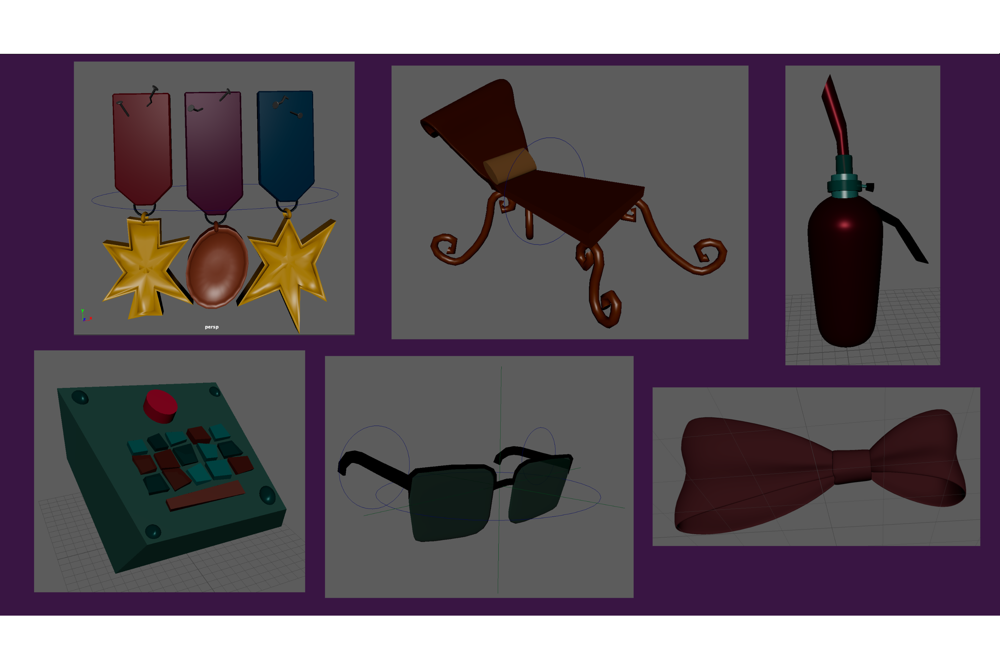
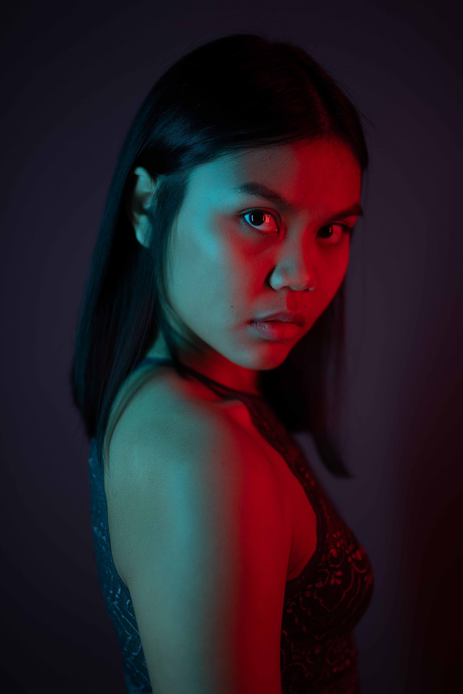
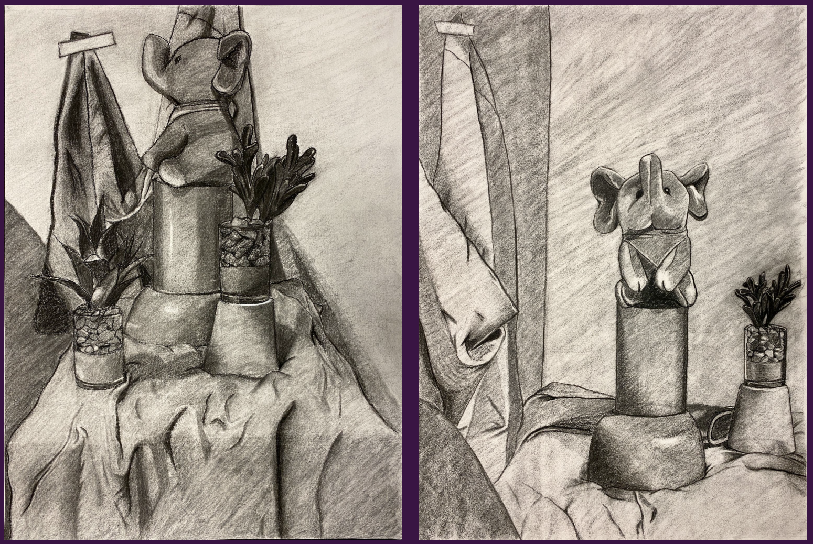
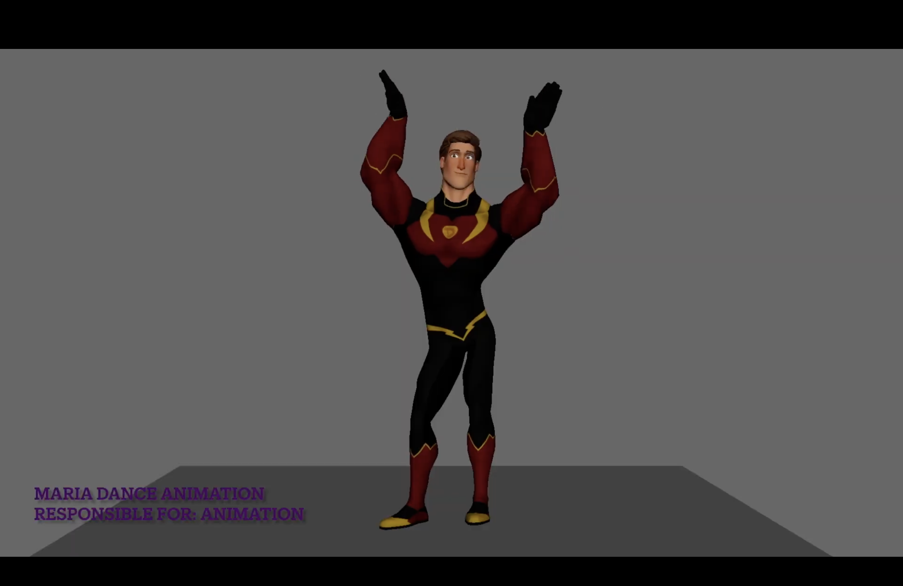

Portfolio
This is a small collection of the many different art and projects that I have created and worked on over the past few years.
I work in many mediums from 3D Modeling and Animation all the way to Performance Acting and Fashion Modeling.
- Moon's Malady - 3D Prop Models & Rigs
- Photography Collab - Andrea Muroni
- Charcoal Diptych (2022)
- 3D Animation Demoreel

Film: Moon's Malady - 3D Prop Models & Rigs
I designed low-poly 3D props for Moon's Malady with stylistic cohesiveness in mind while balancing visual clarity and performance constraints. They were simple props using recognizable silhouettes with the film's asymmetrical style in mind. I built these models in Maya with low-poly techniques, performed multiple scene composition tests, and rigged assets for animation. These are just a few of the assets I made.
Portrait Photography Collab - Andrea Muroni
Photographer: Andrea Muroni
Model: Zun Win
This was one of the photos taken during a portraiture photography shoot in Marino, Italy.


Charcoal Diptych (2022)
A diptych still life I created for my drawing 200 class during my undergraduate foundations studies. My first time using charcoal for a full piece and I grew to like the medium because of this specific project.
3D Animation Demoreel
Click here to see my demoreel!